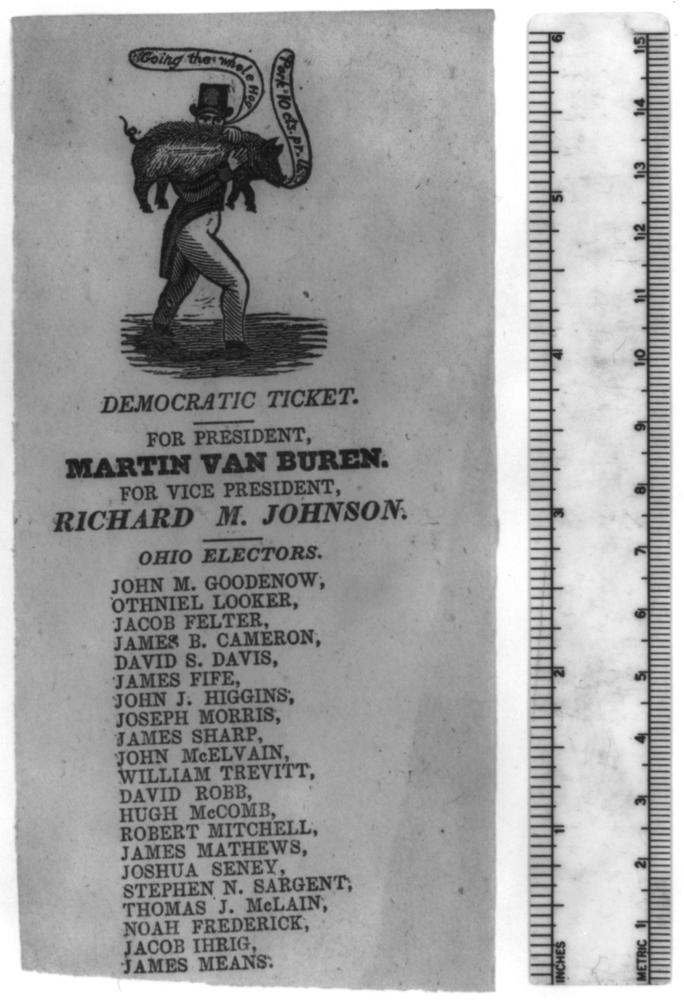
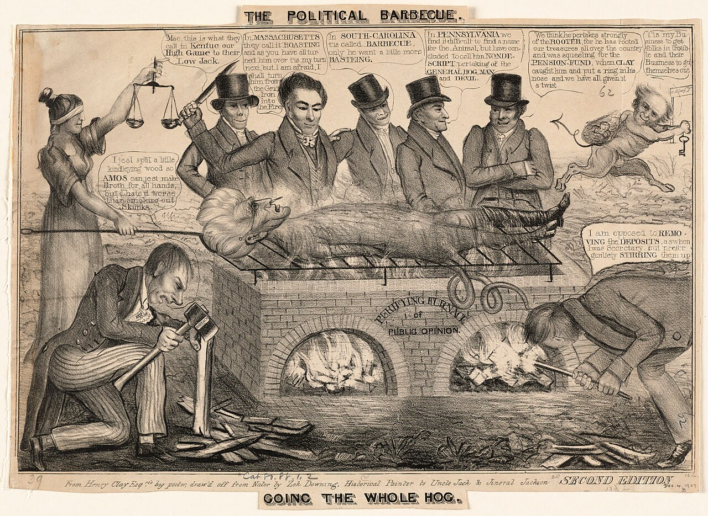
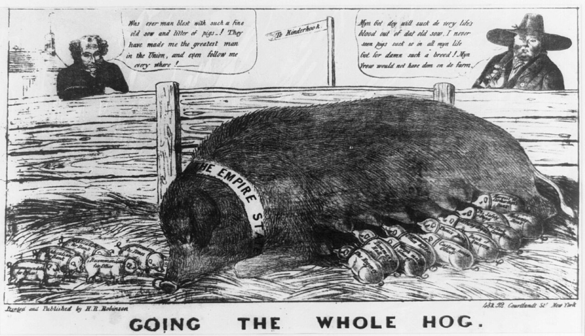

pig art · usGoing the whole hog — the 1830s barbecue lithographs
also: The Political Barbecue · Going the Whole Hog · Jackson-era barbecue cartoons

A small group of American political prints from the 1830s in which the barbecue is the joke and the pig is the politician. A lithograph — a print pulled from a drawing made on stone, the cheap illustrated medium of the period — could be sold loose from a shop window within days of the news. H. R. Robinson of New York issued The Political Barbecue in 1834, laying Andrew Jackson on a grid iron over a brick pit lettered PUBLIC OPINION, with one bystander remarking that in South Carolina it is called barbecue. Others draw out the campaign phrase going the whole hog. They are the oldest barbecue pictures this project can show.
What going the whole hog meant
The phrase was already a political term of art before the prints. To go the whole hog was to back a man or a measure entirely, without the hedging and half-support a faction could otherwise offer, and in the Jackson years it attached itself to the Democrats — a Whig could use it as an accusation of blind loyalty and a Democrat could use it as a boast, which is what makes it usable in a picture.
Both sides did use it. One of these sheets is not a cartoon at all but a ballot: a Democratic ticket for Martin Van Buren for President and Richard M. Johnson for Vice President, with the Ohio electors listed under them, and at the head a woodcut of a man in a tall hat carrying a hog across his shoulders. Two banners come off the hog. One reads Going the whole Hog. The other reads Pork 10 cts. p lb.
The pun sits on a real thing. A whole hog was what a barbecue actually cooked: the animal split and laid over coals, fed to a crowd assembled to hear a candidate. A print that draws a whole hog in an election year is making a joke and reporting a fact at once, and the audience had to be told neither half.

{kind=link}
Robinson's Jackson on the grid iron
The Political Barbecue, a lithograph on wove paper about 25.5 by 36.6 centimetres, was published by H. R. Robinson at 52 Courtlandt Street, New York, in 1834, and is held by the Library of Congress. Andrew Jackson lies stripped on a grid iron over a brick pit with two arched fireboxes, and the word lettered along the brickwork between them is PUBLIC OPINION. Justice stands at the left with her scales and a knife. Five men in tall hats lean over the body; two more crouch at the fireboxes working the coals.
The speech balloons are a survey of what the country called the thing. One man says that in Massachusetts they call it roasting; another that in Kentucky it is their High Game to their Low Jack. A third says: 'In South Carolina it is called Barbecue only he wants a little more Basting.' The sheet is a national joke that stops to name South Carolina as the place where the word lives.
A second treatment of the subject, undated but placed around 1832 to 1833, survives in the Digital Commonwealth from an unknown artist, captioned The political barbecue, Going the whole hog. Robinson's other sheet drops the fire altogether: Going the Whole Hog shows an enormous sow lying in a yard, a band across her shoulders reading THE EMPIRE STATE, and a litter of small pigs at her, each labelled with an office or a favour. A signpost points To Kinderhook, Van Buren's home village. Van Buren leans over the fence and says the sow and her litter have made him the greatest man in the Union; a farmer opposite, drawn with a Dutch accent, says the pigs will suck the life's blood out of that old sow.
{kind=link}

{kind=link}

{kind=link}
Why they sit in a Carolina catalogue
None of these prints is Carolinian. They are New York and Boston commercial lithographs about national politics. They belong here because the thing they are joking about is the Carolina and Virginia political barbecue: the free feed a candidate laid on to gather a crowd, which Robert Moss finds established in the colonies by the 1700s and running through the early republic.
Inference — a cartoonist only reaches for an image his readers already hold. That a northern print shop could draw a candidate on a barbecue grid iron in 1834 and expect the country to get it says the southern political barbecue was national furniture by then. South Carolina's Galivants Ferry stump meeting, which began in 1880 and is still held, is the same institution two generations later, with the pig still on the fire.
Facts
| kind | |
|---|---|
| state | us |
| region | The American South, The Carolinas |
| links | The political barbecue (1834) — Library of Congress catalogue record · The political barbecue, Going the whole hog — Digital Commonwealth |
| confidence | medium · needs verification · updated 2026-09-16 |
Its kin
Pictures
Sources
- Barbecue: The History of an American Institution — Robert F. Moss, 2010
- Wikimedia Commons · link
- Whole hog barbecue — Wikipedia · link
Where it came from: Cited a source we name · Harvested pulled from an open dataset · Tradition what the tradition says, hedged · Inference this project's reasoning · Field somebody stood there. This record as JSON.